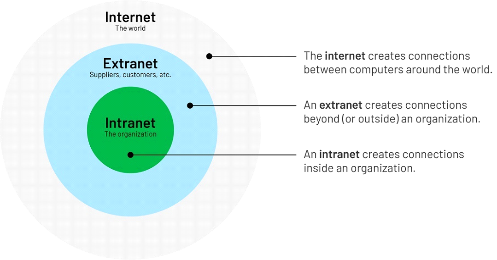
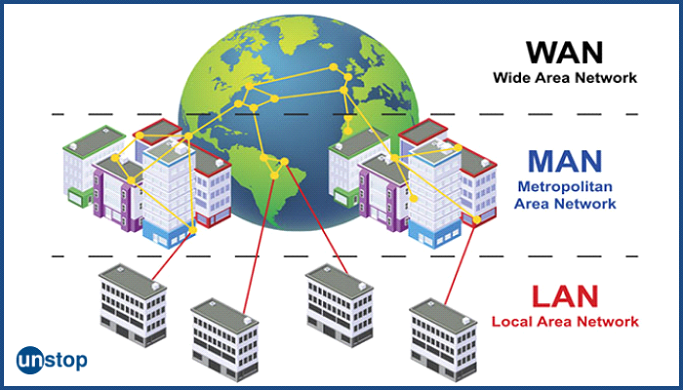
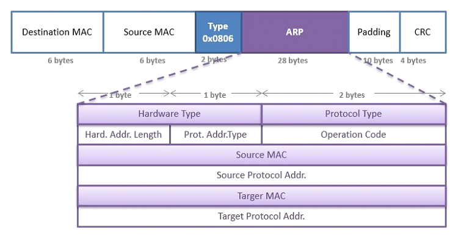

Základní síťové technologie LAN, MAN, WAN a komunikační protokoly. Znalost funkce aktivních prvků - router, switch. MAC adresa, IP adresa, ARP, směrování

LAN (Local Area Network)
LAN je seskupení síťových prvků které nám dovolují komunikovat mezi různě propojenými zařízeními. Na LAN síti není takové zpoždění jako na ostatních typech. Za LAN je vždy odpovědný nějaký soukromník. Zabírá menší území jako jsou školy, nemocnice, office.
MAN (Metropolitan Area Network)
Zabírá větší území než LAN, jako například: vesnice, menší města. MAN by měla propojovat jeden a více zařízení ze stejného nebo jiného města. MAN je drahá a neměla by být vlastněna jednou organizací.
WAN (Wide Area Network)
Zabírá větší území než předchozí dva, propojuje například: státy nebo kontinenty. WAN stejně jako MAN je drahá a neměla by být vlastněna jednou organizací.
Basis
LAN
MAN
WAN
Full-Form
LAN stands for local area network.
MAN stands for metropolitan area network.
WAN stands for wide area network.
Geographic Span
Operates in small areas such as the same building or campus.
Operates in large areas such as a city
Operates in larger areas such as country or continent.
Ownership
LAN's ownership is private.
MAN's ownership can be private or public.
While WAN also might not be owned by one organization.
Transmission speed
The transmission speed of a LAN is high.
While the transmission speed of MAN is average.
Whereas the transmission speed of WAN is slow.
Propagation delay
The propagation delay is short in LAN.
There is more moderate propagation in a MAN.
Whereas, there is a long propagation delay in a WAN.
Congestion
There is less congestion in LAN.
While there is more congestion in MAN.
Whereas there is more congestion than MAN in WAN.
Design & Maintenance
LAN's design and maintenance are easy.
While MAN's design and maintenance are difficult than LAN.
Whereas WAN's design and maintenance are also more difficult than LAN and MAN.
Fault tolerance
There is more fault tolerance in LAN.
While there is less fault tolerance.
In WAN, there is also less fault tolerance.
Komunikační protokoly
Komunikační protokoly jsou pravidla a postupy, které umožňují komunikaci mezi zařízeními v síti. Existuje mnoho různých protokolů, které se používají v různých vrstvách síťového modelu, jako je například TCP, UDP, HTTP, FTP, SMTP, POP3, IMAP a mnoho dalších. Tyto protokoly umožňují přenost dat mezi počítači a zabezpečují spolehlivost, bezpečnost a výkonnost sítě.
Každý typ sítě a každá vrstva síťového modelu používá určité komunikační protokoly, které jsou speciálně navrženy pro konkrétní účely. Například protokol TCP/IP se používá pro přenos dat v síti WAN, zatímco protokol HTTP se používá pro komunikaci mezi webovými prohlížeči a servery v síti LAN nebo WAN.
Switch
Je síťový prvek, který funguje na druhé vrstvě (link layer) ISO/OSI modelu. Slouží k propojení několika počítačů v jedné lokální síti (LAN) a umožňuje jim komunikovat mezi sebou. Přeposílá data mezi jednotlivými porty na základě MAC adres. Switch může rozdělit své porty do více podsítí za pomocí virtuálních LAN (VLAN).
Router
Je síťový prvek, který funguje na třetí vrstvě (network layer) ISO/OSI modelu. Vytváří spojení mezi sítěmi (switchemi) za účelem poskytování data flow mezi těmito sítěmi. Routery přenášejí data ve formě packetu. Využívají se jak v LAN, MAN, tak i WAN. Router zastává často funkci default gateway tedy jako síťový prvek, který routuje packety pryč z LAN, WAN nebo MAN sítě do jiné sítě. Router zajišťuje bezpečnost sítě pomocí NAT (Network address translation) nebo firewallu.
MAC (Media Access Control) adresa
je jednoznačný identifikátor síťového zařízení, který používají různé protokoly druhé (spojové) vrstvy OSI. Je přiřazována síťové kartě bezprostředně při její výrobě (u starších karet je přímo uložena do EEPROM paměti), a proto se jí také říká fyzická adresa, nicméně ji lze u moderních karet dodatečně změnit. Původní IEEE 802 MAC adresa pochází z původního Ethernetového schématu adresování od Xeroxu. Tento 48bitový adresový prostor obsahuje 2^48 neboli 281 474 976 710 656 možných MAC adres (např. 01:23:45:67:89:AB) nebo (0123.4567.89AB).
O první polovinu musí výrobce požádat centrálního správce adresního prostoru a je u všech karet daného výrobce stejná. Výrobce by pak měl každé vyrobené kartě či zařízení přiřadit jedinečnou hodnotu druhé poloviny adresy.
V případě, že se v lokální síti poté objeví dvě zařízení, která mají stejnou MAC adresu, je tato kolize obvykle řešena virtuální změnou (u moderních karet). Pravděpodobnost této kolize je však velice nízká a projevuje se obvykle až u velkých lokálních sítí.
IP ADRESA
IP adresa je v informatice číslo, které jednoznačně identifikuje síťové rozhraní v počítačové síti na třetí vrstvě OSI modelu, která používá IP protokol. V současné době je nejrozšířenější IPv4, která používá 32bitové IP adresy, které jsou zapisovány dekadicky po jednotlivých oktetech (tj. po osmicích bitů), napřiklad 192.168.0.2. Z důvodu nedostatku adres je IPv4 postupně nahrazována protokolem IPv6, který používá 128 bitové IP adresy zapsané hexadecimálně, napřiklad 2001:db8:0:1234:0:567:8:1.
ARP (RFC 826)
Address Resolution Protokol slouží k získání linků/fyzické/MAC addressy rozhraní protistrany v stejné podsíti za pomocí IP adresy. Potřebujeme poslat IP datagram na adresu ležící ve stejné podsíti jako odesílatel. Nejedná se o IP packet ale IP datagram ze kterého IP packet vychází. Má Ethertype value (0x0800) zabalené v IP datagramu samotná ARP (0X0806).
ARP request(IP a MAC source address, destination IP a MAC address) dotaz se posílá linkovým broadcastem. ARP dotaz nepřekročí hranice dané podsítě, ale všechny k ní připojená zařízení broadcast obdrží a jako optimalizační krok si zapíší údaje o jeho odesílateli (IP adresu a odpovídající MAC adresu) do své ARP cache. Vlastník IP adresy pošle nazpátek ARP reply (vlastní IP a MAC adresa) tu si zapíše přijemce do ARP cache a může poslat datagram.

Routing
Označuje v informatice určování cest datagramů v prostředí počítačových sítí. Směrování zajišťují nejen routery, ale i koncové stanice (při vysílání) a jeho úkolem je doručit datagram (resp. packet) adresátovi, pokud možno co nejefektivnější cestou. Směrování zajišťuje síťová vrstva modelu ISO/OSI a je využíváno v lokálních sítích LAN i na Internetu, kde jsou dnes směrovány zejména IP datagramy. Síťová infrastruktura mezi odesílatelem a adresátem paketu může být velmi složitá, a proto se směrování zpravidla nezabývá celou cestou packetu, ale řeší vždy jen jeden krok, tj. komu datagram předat jako dalšímu.